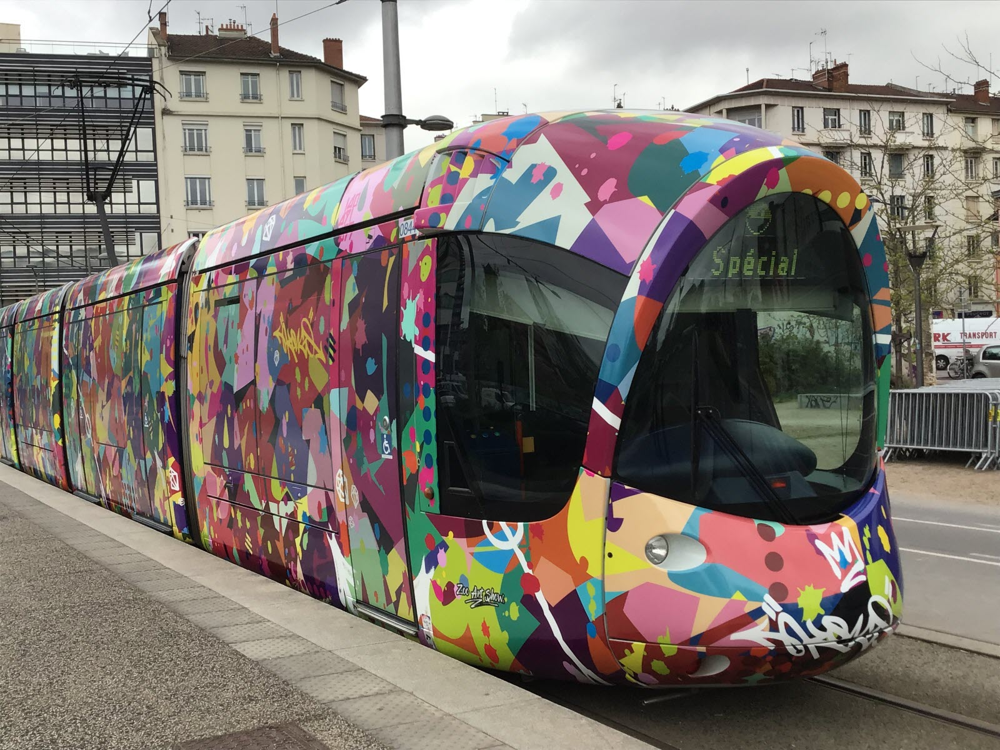

Tramway T1 et T4
Les tramways de Lyon forment un réseau de transport en commun moderne et performant géré par le réseau TCL (Transports en Commun Lyonnais). Avec plusieurs lignes traversant la ville et sa banlieue, le tramway constitue un moyen de transport clé dans la métropole lyonnaise. Les tramways offrent une alternative rapide et fiable pour se déplacer, en particulier dans les zones densément peuplées. Dotés de wagons spacieux et confortables, les tramways de Lyon sont accessibles à tous, y compris aux personnes à mobilité réduite.
Carte
